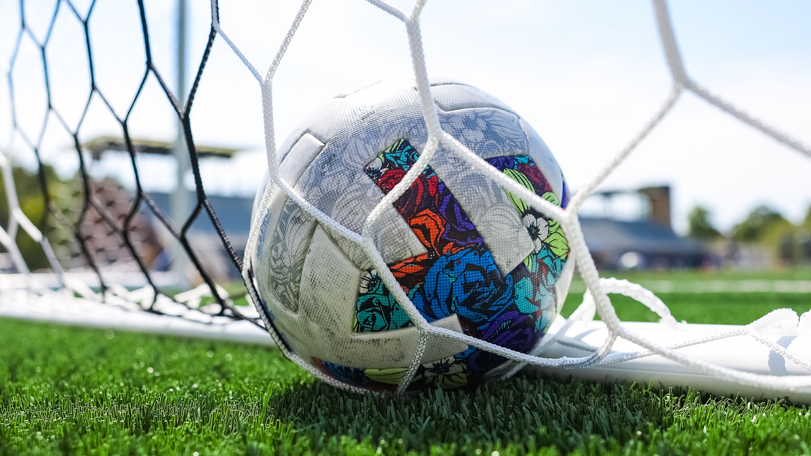
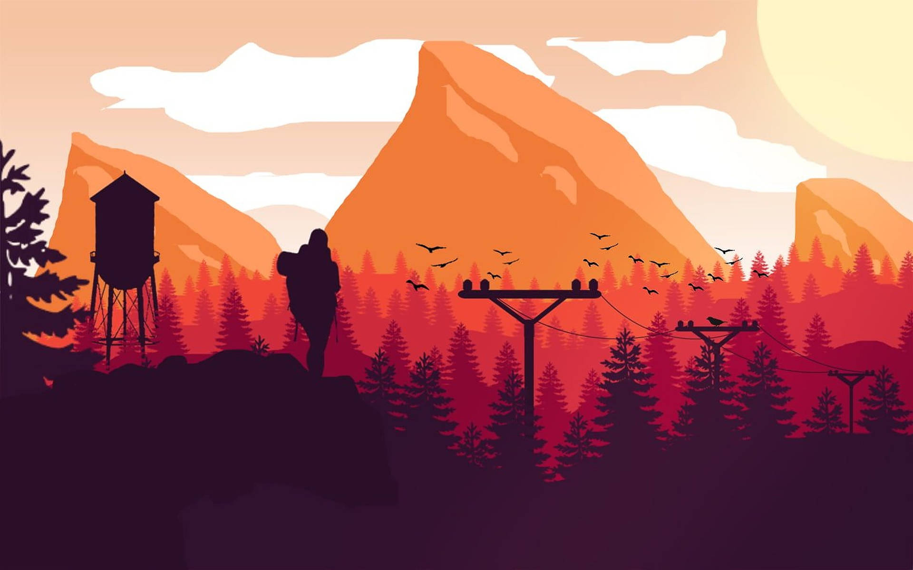

I am a person of diverse interests, always eager to embrace new hobbies and explore a wide array of activities that enrich my life and broaden my horizons.

As a passionate soccer enthusiast, I've regularly played and represented my school and university in numerous tournaments. My dedication to the sport has not only showcased my skills on the field but also taught me valuable lessons in teamwork and discipline. Soccer has been a significant part of my life, shaping my personal and athletic growth.
A fervent cricket aficionado, I've not only engaged deeply with the sport but also clinched numerous tournaments during my school and university years. My journey in cricket is marked by victories and personal milestones, highlighting my skill, strategy, and dedication. These triumphs in various competitions underscore my contribution to the teams' successes and my growth as a cricketer, shaping my resilience and competitive spirit.
As an anime fan, I immerse myself in the vibrant worlds and intricate stories that this genre offers. My fascination with anime goes beyond mere entertainment; it's a window into diverse cultures, philosophies, and the boundless creativity of storytelling. This passion has not only enriched my imagination but also connected me with a global community of like-minded enthusiasts.

An avid hiker, I relish the thrill of exploring the great outdoors, one trail at a time. My interest in hiking stems from a deep appreciation for nature and the unparalleled sense of peace it offers. Each journey on foot brings new discoveries, challenges, and a profound connection with the environment, fostering my sense of adventure and well-being.
Passionate about maintaining a healthy and active lifestyle, my gym sessions are a cornerstone of daily discipline and vigor. This commitment reflects in my pursuit of physical strength, mental clarity, and overall well-being, making each workout an essential part of my journey towards personal excellence.